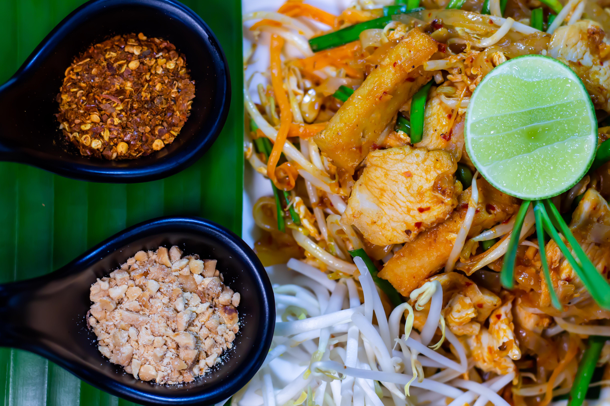

Pad Thai

Pad Thai is a Thai noodle stir fry with a sweet-savoury-sour sauce scattered with crushed peanuts. It's made with thin, flat rice noodles, and almost always has bean sprouts, garlic chives, scrambled egg, firm tofu and a protein - the most popular being chicken or prawns/shrimp.
I N G R E D I E N T S
Main Ingredients
- 8 ounces flat rice noodles
- 3 Tablespoons oil
- 3 cloves garlic, minced
- 8 ounces uncooked shrimp or chicken
- 2 eggs
- 1 cup fresh bean sprouts
- 1 red bell pepper, julienne
- 3 green onions, chopped
- 1/2 cup dry roasted peanuts
- 2 limes
- 1/2 cup fresh cilantro, chopped
Pad Thai Sauce Ingredients
- 3 tablespoons fish sauce
- 1 tablespoons low-sodium soy sauce
- 5 tablespoons light brown sugar
- 2 tablespoons tamarind paste
- 1 tablespoon dried thai chili flakes, or more, to taste
- 2 tablespoons peanut butter
Instructions
- Cook noodles according to package instructions, just until tender. Rinse under cold water.
- Make sauce by combining sauce ingredients in a bowl. Set aside.
- Stir fry. Heat 1½ tablespoons of oil in a large saucepan or wok over medium-high heat. Add the shrimp, chicken or tofu, garlic and bell pepper. The shrimp will cook quickly, about 1-2 minutes on each side, or until pink. If using chicken, cook until just cooked through, about 3-4 minutes, flipping only once.
- Push everything to the side of the pan. Add a little more oil and add the beaten eggs. Scramble the eggs, breaking them into small pieces with a spatula as they cook.
- Add noodles, sauce, bean sprouts and peanuts to the pan (reserving some peanuts for topping at the end). Toss everything to combine.
- Garnishthe top with green onions, extra peanuts, cilantro and lime wedges. Serve immediately!
- Store leftovers in the fridge and enjoy within 2-3 days.